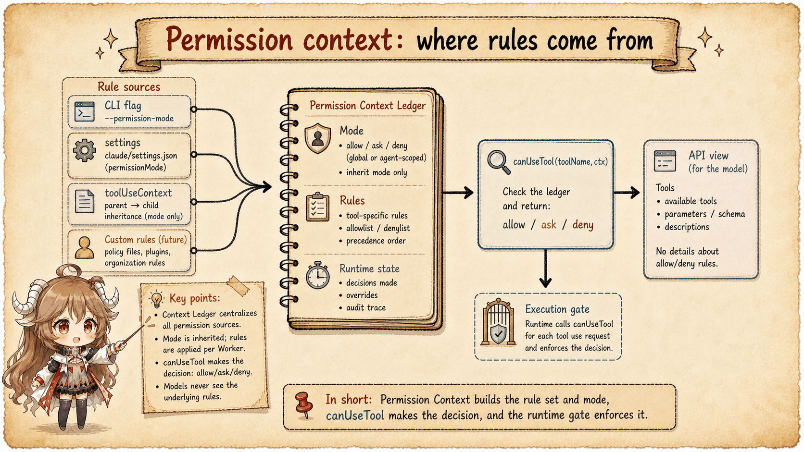
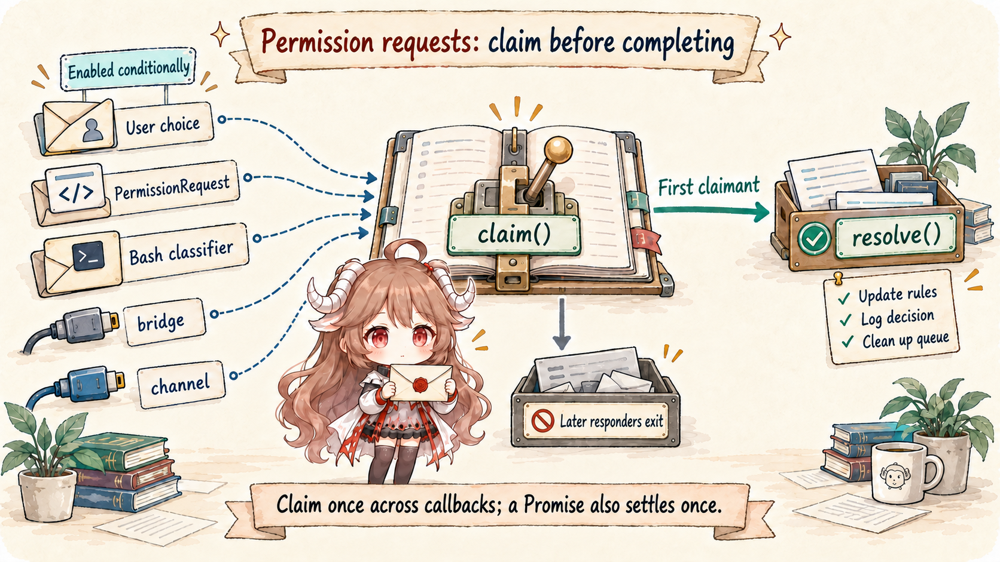
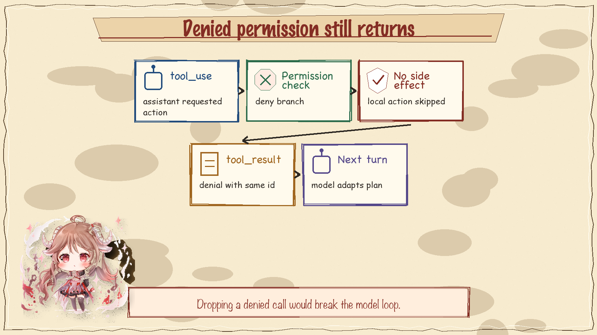

A coding agent reads files, edits files, runs commands, and talks to external tools. Those actions do not have the same risk. Claude Code therefore threads permission state through the tool runtime instead of leaving it as a UI-only feature.
type PermissionDecision = "allow" | "deny" | "ask"
tool_use
-> PreToolUse hook
-> canUseTool({ mode, rules, toolCheck, context })
-> allow | deny | ask
-> execute tool | return denial result | suspend for user choice1. Permission context travels with the tool call
ToolPermissionContext is part of the state used while a tool call is evaluated. It gives the permission layer access to current mode, settings, rules, and session facts. The important point is that the decision is made in the same runtime path that will execute the side effect.

2. Allow, deny, and ask are runtime branches
The permission decision stack can produce three practical outcomes. An allowed tool can continue. A denied tool returns a model-visible denial result. An ask branch suspends progress long enough to collect a user decision. That branch point is why permission code affects both UX and model behavior.

3. Hooks can participate before execution
Pre-tool hooks are part of the same story. A hook can inspect the tool request before execution and influence whether the action proceeds. That makes hooks governance points, not merely shell callbacks. They sit on the side-effect boundary.
4. Asking the user is a race-sensitive path
When the runtime asks for confirmation, it must keep the tool call, the UI prompt, and the eventual response aligned. Background events and new user input may still exist. The command queue and permission-request handling keep that interaction from turning into an ambiguous state.

5. Denial still returns a result
When a tool is denied, Claude Code still needs to close the provider protocol loop. The model requested a tool id, so the client returns a paired tool result that explains the denial. That is healthier than dropping the call, because the next model turn can adapt instead of waiting for a result that never comes.

6. The invariant
Permission is the brake between language and side effect. Any code that bypasses it turns a model proposal into local action without the runtime's policy layer. That is the line this article keeps watching.
Sources
The source-code claims in this article are based on the public mirror and the linked official documentation. Server-side behavior and private feature-gate policy are treated only as client-visible request shape.